Environment Scan of Generative AI Infrastructure for Clinical and Translational Science
Consortium
This study reports a comprehensive environmental scan of the generative AI (GenAI) infrastructure in the national network for clinical and translational science across 36 institutions supported by the Clinical and Translational Science Award (CTSA) Program led by the National Center for Advancing Translational Sciences (NCATS) of the National Institutes of Health (NIH) at the United States. With the rapid advancement of GenAI technologies, including large language models (LLMs), healthcare institutions face unprecedented opportunities and challenges. This research explores the current status of GenAI integration, focusing on stakeholder roles, governance structures, and ethical considerations by administering a survey among leaders of health institutions (i.e., representing academic medical centers and health systems) to assess the institutional readiness and approach towards GenAI adoption. Key findings indicate a diverse range of institutional strategies, with most organizations in the experimental phase of GenAI deployment. The study highlights significant variations in governance models, with a strong preference for centralized decision-making but notable gaps in workforce training and ethical oversight. Moreover, the results underscore the need for a more coordinated approach to GenAI governance, emphasizing collaboration among senior leaders, clinicians, information technology staff, and researchers. Our analysis also reveals concerns regarding GenAI bias, data security, and stakeholder trust, which must be addressed to ensure the ethical and effective implementation of GenAI technologies. This study offers valuable insights into the challenges and opportunities of GenAI integration in healthcare, providing a roadmap for institutions aiming to leverage GenAI for improved quality of care and operational efficiency.
Which stakeholder groups are involved in decision-making and implementation of GenAI?
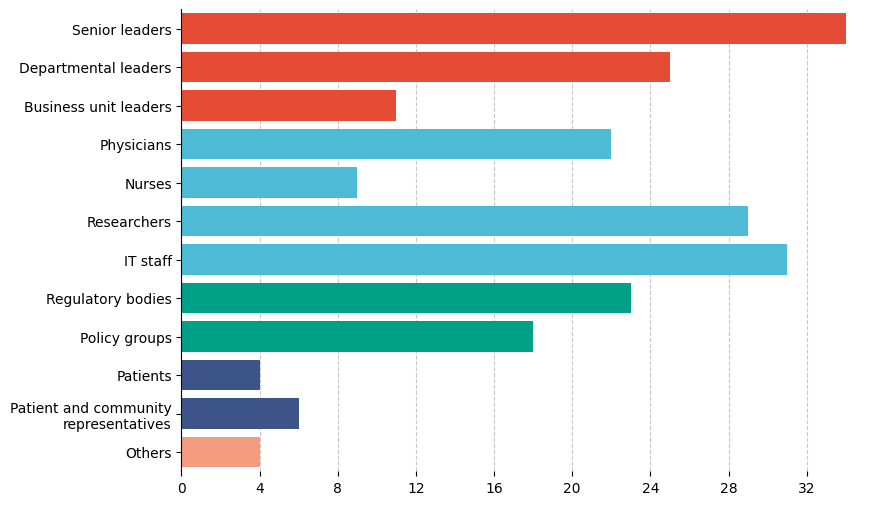
Who leads the decision-making process for implementing GenAI applications?
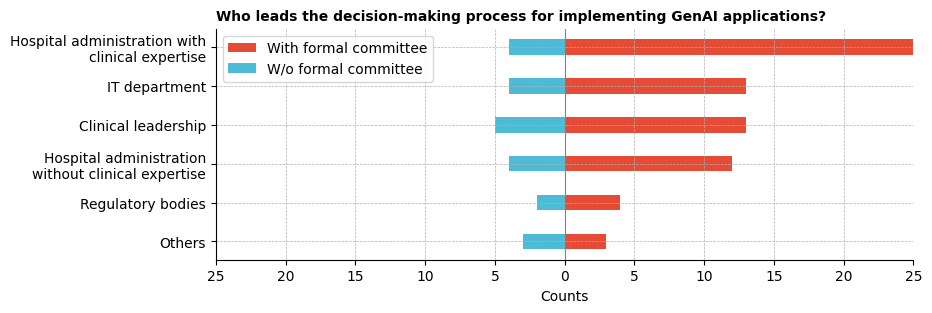
How are decisions regarding adopting GenAI made in your healthcare system?
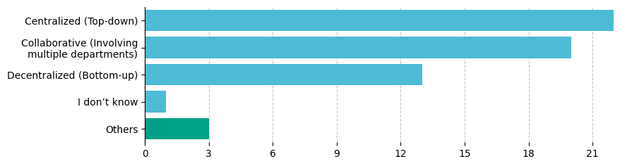
Do you have an ethicist or an ethics committee involved in the decision-making process for implementing GenAI technologies?
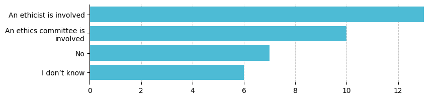
What is the stage of GenAI adoption?
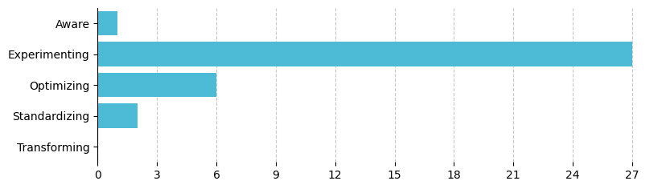
How well do GenAI applications integrate with your existing systems and workflows?
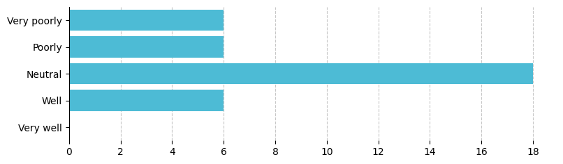
How familiar are members of the workforce with the use of LLMs?
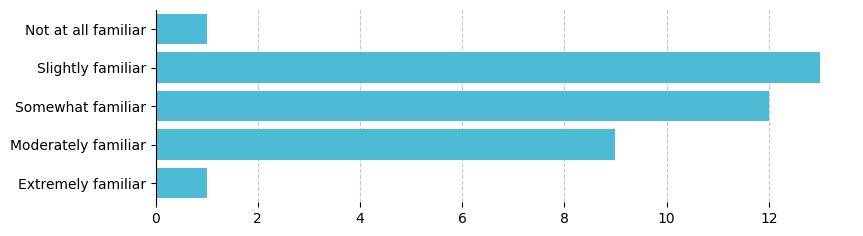
How desirable is it for the workforce to receive further LLM training?
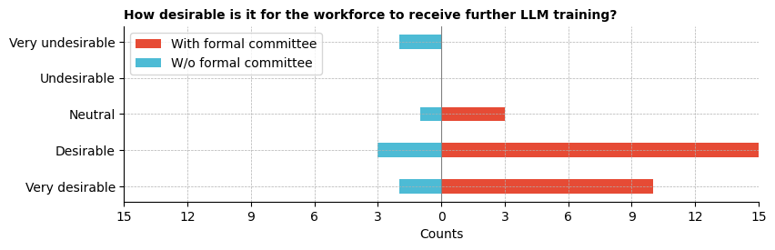
Have funds been allocated for GenAI projects?
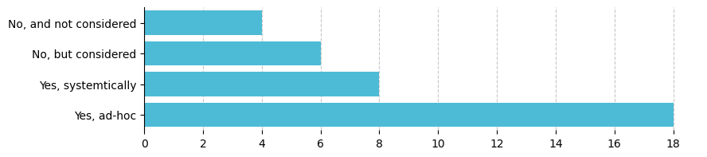
Compared to 2021, how does the budget allocated to GenAI projects change?
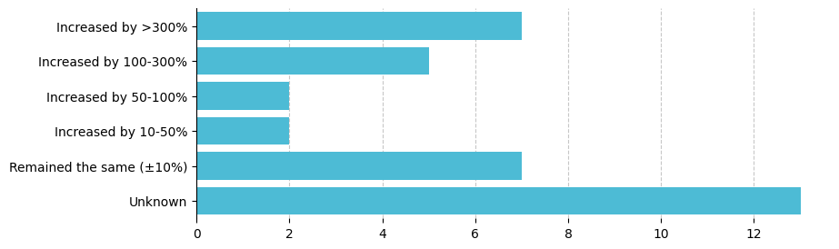
Which of the following types of LLM are your organization currently using?

What AI deployment options does your organization currently use?

What factors influenced your decision to develop open or proprietary LLMs solutions?
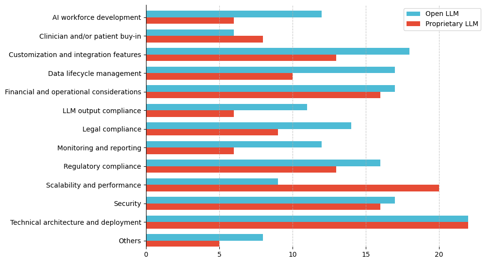
Which of the following use cases are you currently using LLMs for?
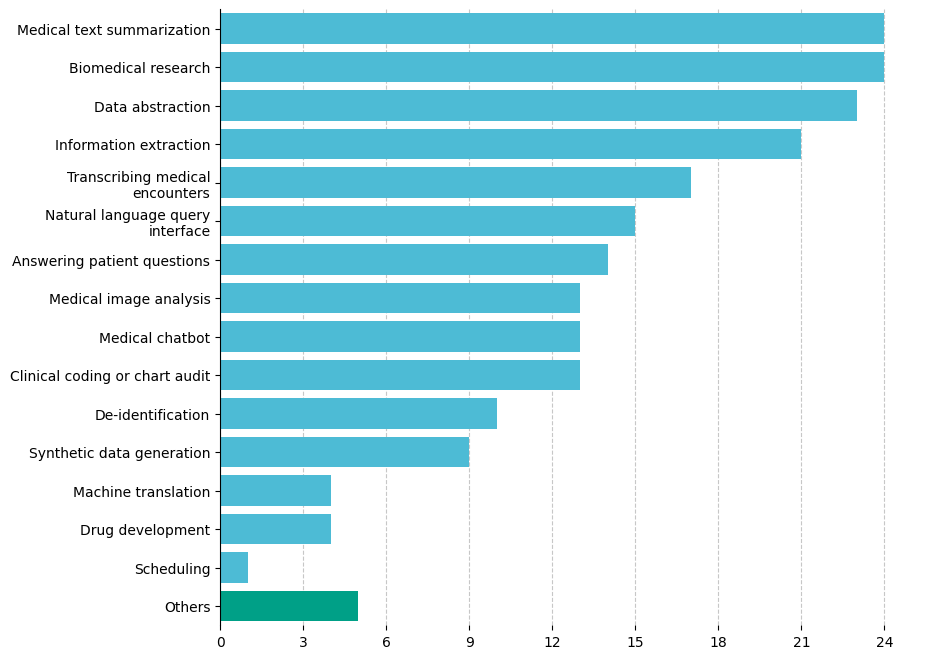
The importance of each of the following criteria when evaluating LLMs?
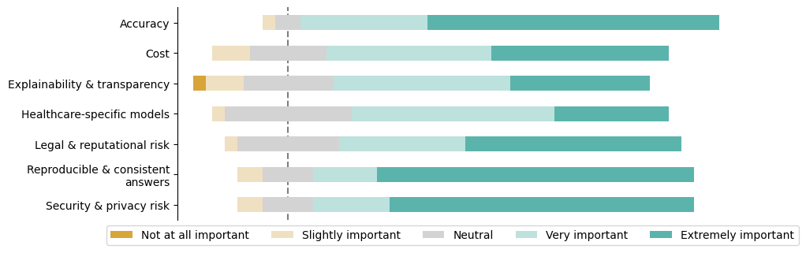
How significant the following potential limitations or roadblocks are to your roadmap for current generative AI technology?
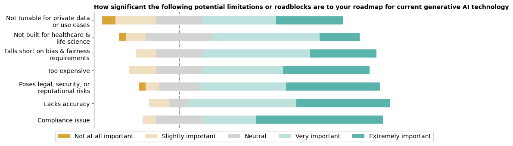
How much you think LLMs will impact each use case over the next 2-3 years
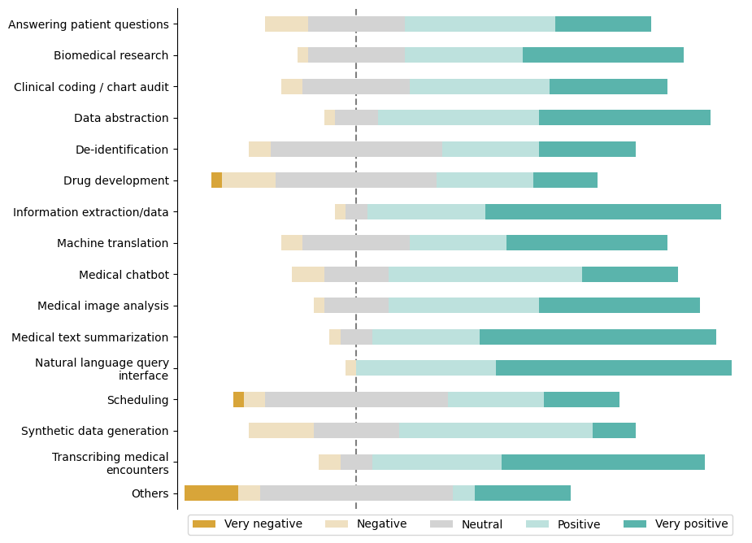
What improvements, if any, have you observed since implementing GenAI solutions in your healthcare system?
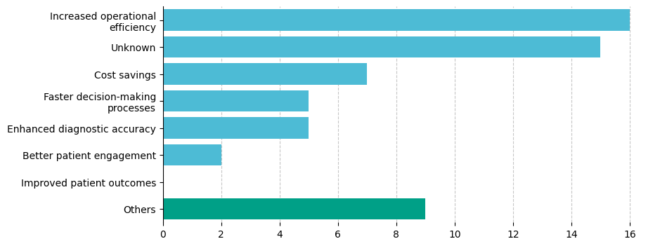
What drawbacks or negative impacts, if any, have you observed since implementing GenAI solutions?
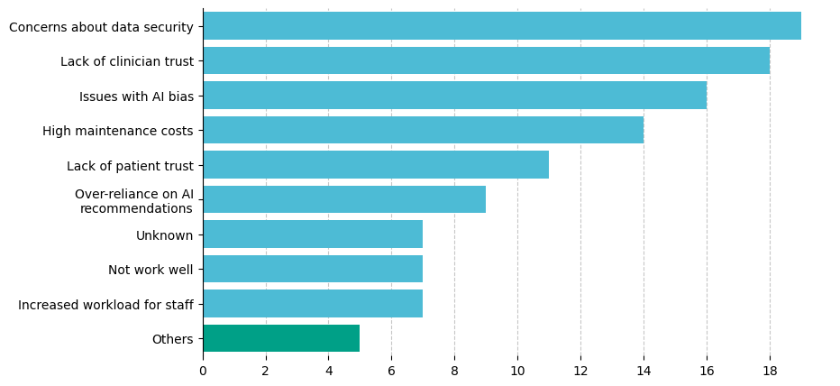
Which steps do you take to test and improve your LLM models?
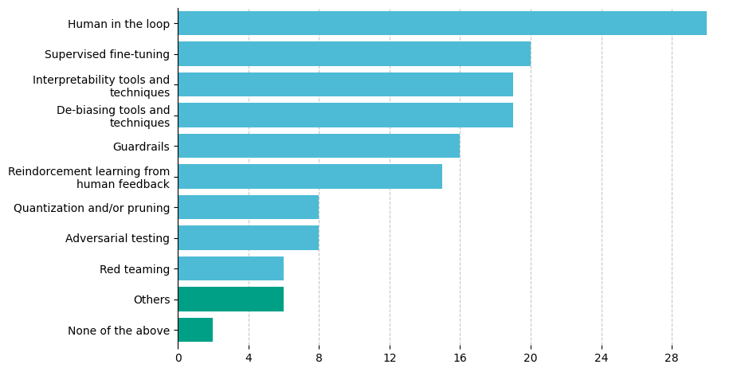
What type(s) of evaluations have your deployed LLM solutions undergone?
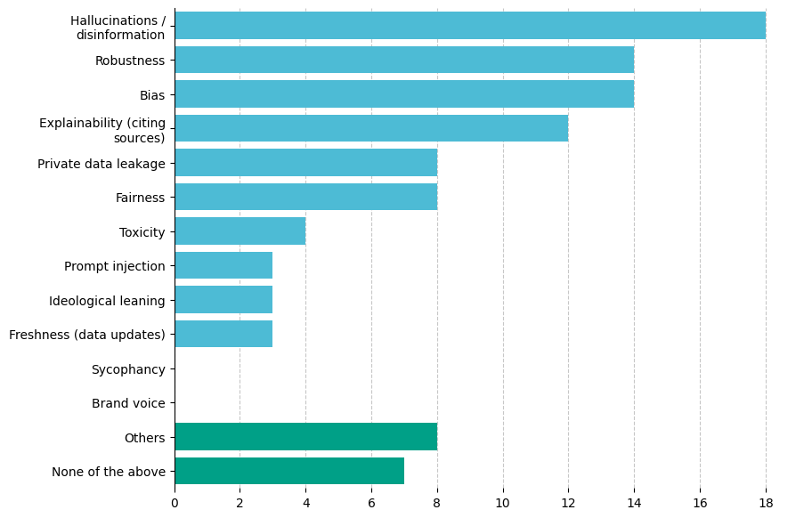
What challenges, if any, have you faced in integrating GenAI with existing systems?
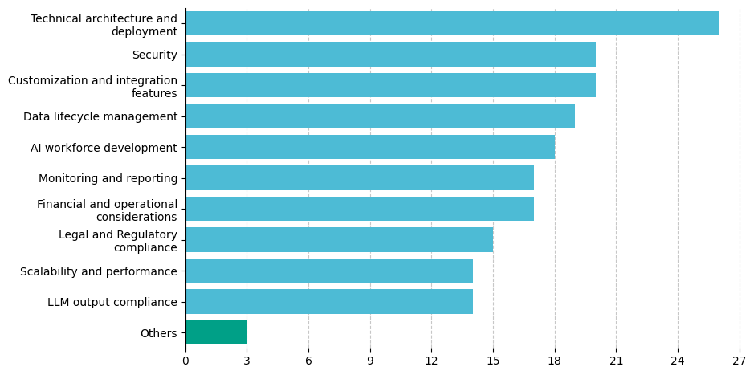
Acknowledgement
This work was supported by the National Center for Advancing Translational Sciences (NCATS) of the National Institutes of Health (NIH) under grant numbers UL1TR002384, UM1TR004789, UL1TR001412, UL1TR001449, ULTR002345, UM1TR004404, UL1TR001866, UM1TR004909, and UL1TR001873; National Library of Medicine (NLM) of NIH under grant numbers T15LM007079, T15LM012495, R25LM014213; and the National Institute on Alcohol Abuse and Alcoholism of NIH grant numbers R21AA026954 and R33AA0226954. This study was also funded in part by the Department of Veterans Affairs and NIH Intramural Research Program. The content is solely the responsibility of the authors and does not necessarily represent the official views of the NIH.
@2024 Weill Cornell Medicine